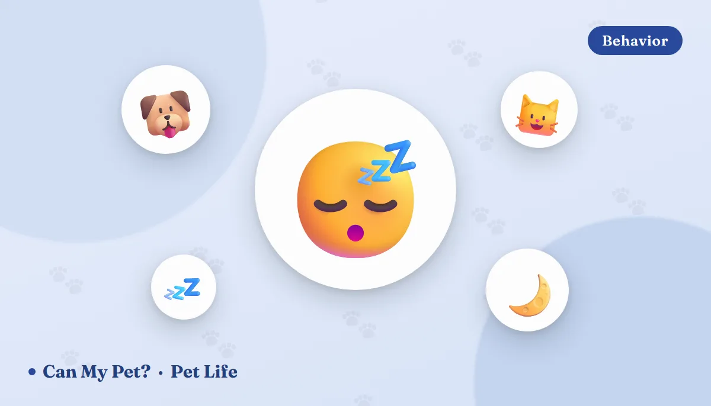

What Your Pet's Sleeping Position Means
🪄 Just for fun — this one's entertainment, not science
Somewhere in your house right now there is an animal folded into a shape that would send a human to a chiropractor. The donut. The sploot. The loaf. The one where the cat's head hangs off the edge of the sofa at an angle that suggests she has left her body entirely. It's irresistible to read meaning into all of it — so let's have that fun, honestly labelled. Below is a warm, tongue-in-cheek tour of the classic dog and cat sleeping positions and the "vibe" each one gives off. Then, because we're CanMyPet, we'll tell you what sleep posture genuinely reveals, how much sleep is normal, and the one position that should send you straight to the phone.
🐶 Dog sleeping positions, decoded (playfully)
🍩 The Donut cozy & a little cautious
Nose tucked to tail, spine curved, paws pulled in tight. This is the oldest shape in the book — it protects the vital organs and holds body heat beautifully. Dogs do it more in cold rooms, in new places, and on the first night in a new home. Common in dogs who like a den-shaped bed with raised sides.
🦸 The Superman (a.k.a. the sploot) ready to party, mid-nap
Belly flat on the floor, back legs kicked straight out behind, front legs stretched ahead. Puppies do this constantly. It presses the warm belly against cool tile, which is why you see it far more in July than in January, and it means the dog can be upright and chasing something in about a tenth of a second.
🙃 The Belly-Up Crazy Legs peak trust, peak overheating
On the back, legs in the air, mouth slightly open, dignity fully surrendered. This is the classic "he must feel so safe" position — and there's something to it, since it's the hardest posture to spring up from and it exposes the belly. It's also the single most efficient way for a dog to cool down, because the belly and paw pads have the thinnest fur. So: probably a relaxed dog, definitely a warm one.
🦁 The Sphinx (or Lion's Pose) technically off duty
Head resting on outstretched front paws, body upright. This is dozing rather than sleeping — the dog is resting but keeping one metaphorical eye on the kitchen. You'll see it during the day, near doorways, and any time there's a chance food might happen.
🫂 The Cuddler you are furniture now
Pressed against you, another dog, or the cat, ideally with maximum surface contact. Social sleeping is normal in dogs and shows up strongly in bonded pairs. It's warmth plus company, which is the entire dog value proposition in one image.
🛏️ The Burrower bed gremlin
Under the blanket, under the pillow, under you. Very common in terriers and dachshunds, which were bred to go into things, and in small dogs generally, who lose heat faster. It's usually about warmth and the pleasant pressure of being enclosed.
😌 The Side Sleeper the sign of a genuinely comfortable dog
Flat out on one side, legs extended, sometimes twitching or "running." This is the position where the deepest, most restorative sleep usually happens — and it's where you're most likely to catch the paddling paws and muffled woofs of a dreaming dog. Yes, they almost certainly dream: see do dogs dream? for what the sleep-lab research actually found.
🐱 Cat sleeping positions, decoded (equally playfully)
🥐 The Croissant classic, unbothered
Curled nose-to-tail with the tail draped over the face like a scarf. Warm, compact, and the feline default in anything below room temperature.
🍞 The Loaf resting, not sleeping
Paws tucked invisibly underneath, tail wrapped, eyes at half-mast. The loaf is a holding pattern — warmth conserved, body compact, but able to stand up instantly. A cat in a full loaf with narrowed eyes is content. A tight, hunched loaf with a tucked chin, especially in a cat who normally sprawls, is worth a second look; that hunched posture can also be how cats sit when they don't feel well.
🌞 The Belly-Up Sunbeam supremely confident
Stretched on the back in a patch of sun, all four paws pointing in unhelpful directions. Cats expose the belly far less readily than dogs do, so this one really does tend to show up in relaxed, secure cats — but a belly on display is not an invitation to rub it, and many cats will explain this to you at speed.
🌀 The Contortionist physically impossible, emotionally fine
Head upside down, spine at 90 degrees, one leg over the face. Cats have unusually flexible spines and no rigid collarbone, so shapes that look like injuries to us are simply Tuesday to them.
📦 The Box Occupant walls = calm
Any container, however unsuitable. Enclosed spaces reduce stress in cats and shelter research consistently finds that giving cats a box to hide in lowers their stress scores. The Amazon carton is not a joke; it's therapy.
👤 The Head-Sleeper you have been chosen
On your pillow, on your chest, on your face at 4am. Warmth is the leading theory (your head loses a lot of heat), closeness is the other, and there is a strong third possibility involving breakfast timing.
If you enjoy reading your pet like this, the non-fictional version is genuinely useful: cat body language and tail talk and dog body language explained cover the signals that actually mean something.
Okay — what does sleep position really tell you?
Mostly three things, in this order.
| What you see | The likeliest explanation |
|---|---|
| Curled tight, tucked, burrowed | Temperature. Conserving heat. Cold room, thin coat, small body, senior pet, or simply winter. |
| Sprawled, belly exposed, on tile | Temperature again. Dumping heat through the belly and paw pads. Very common in summer. |
| Deep, floppy, hard to wake, out in the open | Security. Deep sleep requires feeling safe. New or anxious pets sleep lightly and near exits. |
| Always the same side; hesitates to lie down or get up | Comfort. Joint pain, an injury, or a bed that's too hard. Worth mentioning at the next vet visit. |
| A sudden, sustained change in how they sleep | Watch this one. Changes in sleep pattern or posture are a common early sign that something hurts. |
What sleep position does not reliably tell you is personality. There's no good evidence that donut-sleepers are shyer or belly-up sleepers are friendlier as a matter of character. If you want a personality read with slightly more behind it, our dog personality types and cat personality types guides are the better rabbit hole.
How much sleep is normal?
- Adult dogs: roughly 12–14 hours across 24 hours, including daytime naps.
- Puppies: 18–20 hours. If your new puppy seems to be asleep constantly, that's the job. Our new puppy checklist covers what a realistic first month looks like.
- Adult cats: around 12–16 hours, spread over the day, with a burst of activity at dawn and dusk.
- Kittens and senior cats: often closer to 20 hours. See the new kitten checklist for what else to expect.
- Senior pets of both species sleep more and more deeply, and are more likely to shift positions because of arthritis. A softer, supportive bed helps more than people expect.
The number matters less than the change. A dog who has always slept ten hours and suddenly sleeps sixteen, or a cat who stops sleeping in her usual spot, is telling you something.
The one sleeping position that isn't cute
Helping them sleep better (the boring, effective stuff)
Give them a real choice of surfaces and temperatures — a warm den-style bed and a cool hard floor — and most pets will sort out their own thermostat. Keep beds out of high-traffic doorways so they can reach deep sleep. Make sure the day has enough physical and mental work in it, because under-exercised dogs sleep restlessly (see how much exercise your dog needs) and under-stimulated cats redistribute their sleep to 3am (see boredom busters for cats).
And a note on the bedtime snack, since this is CanMyPet: a small piece of plain cooked chicken or a couple of blueberries is a fine evening treat for most dogs, but a heavy, fatty snack right before bed is a common cause of overnight stomach upset. Anything you're unsure about goes through the food checker first, and it's worth knowing the foods that are toxic to dogs and the foods cats should never eat before you share anything off your plate.
Frequently asked questions
Does sleeping on his back really mean my dog trusts me?
It's a reasonable guess, not a proven fact. Belly-up is the hardest position to get up from and exposes the most vulnerable part of the body, so relaxed dogs do it more. It's also the most efficient way to shed heat, so a warm room explains a lot of belly-up dogs. Enjoy it as a good sign, not a verdict.
Why does my cat sleep in a loaf?
It conserves heat while keeping her ready to stand up instantly. The loaf is usually light dozing rather than deep sleep. A tight, hunched loaf in a cat who normally sprawls is worth watching, since cats also sit hunched when they feel unwell.
Which sleeping position is actually a warning sign?
Any position the pet can't get out of. Specifically: refusing to lie flat, sitting or standing with elbows out and neck extended, chin lifted, open-mouth breathing. That's the orthopneic position and it signals breathing trouble. Treat it as an emergency.
My dog twitches, paddles and yips in his sleep. Is that normal?
Very. It's REM sleep and it's typical, especially in puppies and seniors. Don't wake a twitching dog abruptly — a startled dog can snap before it's fully awake. Prolonged, rigid, full-body stiffening is different and should be described to your vet.
How much should my pet sleep?
Roughly 12–14 hours a day for adult dogs, 18–20 for puppies, 12–16 for adult cats and up to 20 for kittens and seniors. A sustained change from your own pet's normal matters more than hitting any number.
Should I let my pet sleep in my bed?
For most healthy households it's simply preference. Reconsider if someone has significant allergies or a weakened immune system, if the pet guards the bed, or if a very small pet could be rolled onto. Otherwise it's common and generally fine.
Sources: American Kennel Club guidance on canine sleep and sleeping positions, ASPCA and International Cat Care material on feline resting behavior and hiding places, American Veterinary Medical Association and veterinary emergency-medicine references on orthopnea, respiratory distress and resting respiratory rate, and published research on sleep architecture in dogs and cats. The "what your pet's position says about them" sections are entertainment, not science 🪄. For information only — not veterinary advice. Any change in your pet's breathing, posture or sleep pattern should be discussed with your own veterinarian.